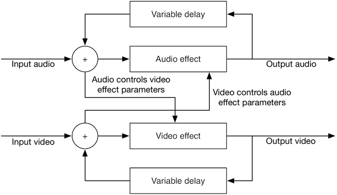
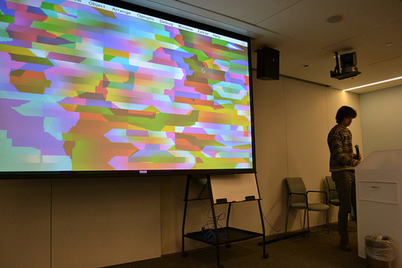

<!DOCTYPE html>
<html>
  <head>
    <meta charset="utf-8" />
    <meta name="viewport" content="width=device-width, initial-scale=1.0" />

    <title>
      Logan Williams — Transdomain Feedback
    </title>

    <link
      rel="stylesheet"
      href="https://unpkg.com/leaflet@0.7.3/dist/leaflet.css"
    />
    <link rel="stylesheet" href="/css/main.css" />

    

    <meta name="twitter:card" content="summary_large_image" />
    <meta name="twitter:site" content="@obtusatum" />
    <meta name="twitter:creator" content="@obtusatum" />
    <meta property="og:url" content="http://subject.space/projects/transdomain-feedback/" />

    
    <meta property="og:title" content="Transdomain Feedback" />
     
    <meta property="og:description" content="Exploring the artistic effects of a feedback loop that repeatedly bridged video and audio domains. " />
      
    <meta property="og:image" content="http://subject.space/projects/transdomain-feedback/background.jpg" />
     

    
    <script
      async
      src="https://www.googletagmanager.com/gtag/js?id=UA-87740234-3"
    ></script>
    <script>
      window.dataLayer = window.dataLayer || [];
      function gtag() {
        dataLayer.push(arguments);
      }
      gtag("js", new Date());

      gtag("config", "UA-87740234-3");
    </script>
  </head>
  <body></body>
</html>


<main>
  <header class="header">
    <h1><a href="/">Logan Williams</a></h1>
  </header>

  <div class="post">
		<h1>Transdomain Feedback</h1>
		<p><p>A project in Max/MSP for <a href="http://new.musichackday.org">Music Hack Day Boston</a> with Drew Shapiro.</p>

<p>Feedback and control loops frequently cross multiple domains &mdash; mechanical and electrical, discrete and continuous, and software and hardware. When used as an artistic device however, this is less common. The feedback is frequently electrical and acoustic, but rarely is video introduced into the loop. For this project, we explored the artistic effects of a feedback loop that involved all of these elements. A block diagram view of the structure of our system is shown below, as well as several example results.</p>

<div class="gallery" style="margin-bottom: 1em">
    
</div>

<p><iframe src="https://player.vimeo.com/video/79360500" width="500" height="375" frameborder="0" webkitallowfullscreen mozallowfullscreen allowfullscreen></iframe> <p><a href="https://vimeo.com/79360500">BASKETBALL</a> from <a href="https://vimeo.com/user12334027">Logan Williams</a> on <a href="https://vimeo.com">Vimeo</a>.</p></p>

<div class="gallery">
<table class="gallery">

    <tr>
        <td>
        <td>
    </tr>
    <tr>
        <td>Presenting a demo at Music Hack Day.</td>
        <td>Still image generated by with transdomain feedback.</td>
    </tr>
</table>
</div>

<div style="margin-top: 1em">
<p>The Max patches are available on <a href="https://github.com/loganwilliams/trans-domain-feedback">Github</a>.</p>
</div>
</p>
	</div>
</main>

    </body>
</html>